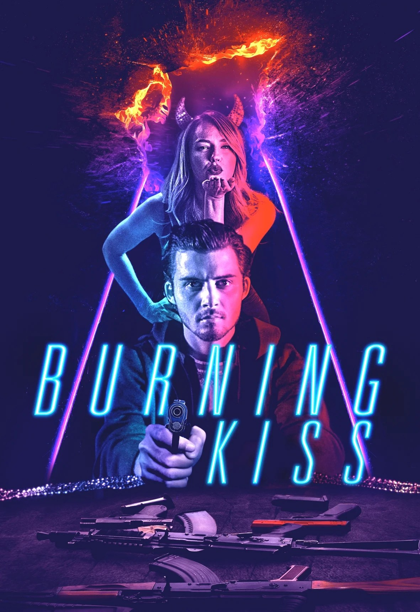
Burning Kiss
Lead role. Hallucinogenic summer noir — a psychological thriller described as Southern Gothic meets French New Wave. Directed by Élan Gamaker. Australian cinematic release via Amazon.
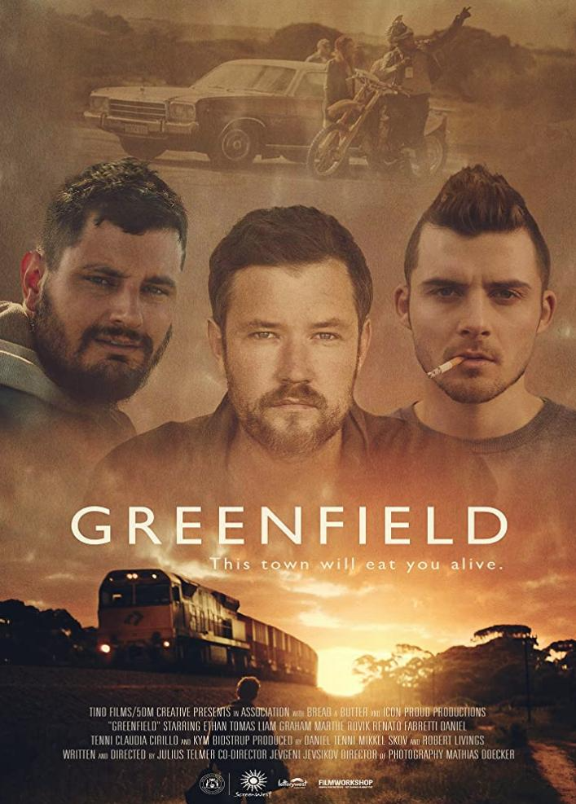
Greenfield
Lead in the multi-award winning Danish-Australian drama. Won Best Actor at the Nordic International Film Festival. Nominated for Best Actor at the WA Screen Awards. Nominated for Best Ensemble Cast at HollyWeb Festival.

The Heights
Recurring role in ABC's acclaimed ensemble drama set in a social housing tower. Tyler is a complex outsider navigating community tensions and personal turmoil in urban Australia.
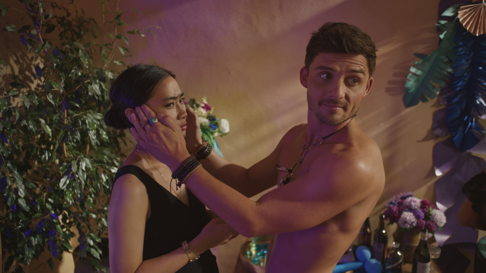
How to Please a Woman
Australian comedy-drama starring Sally Phillips and Erik Thomson. A story about empowerment and second chances. Directed by Renée Webster. Theatrical release in Australia and international markets.

Hounds of Love
Ben Young's award-winning psychological thriller set in 1980s Perth. Premiered at the Venice Film Festival. The film received 1 win and 10 nominations at international festivals.

Into the Dark: Uncanny Annie
The Halloween episode of Blumhouse Productions' horror anthology series for Hulu. A group of friends become trapped in a deadly board game. International streaming distribution.
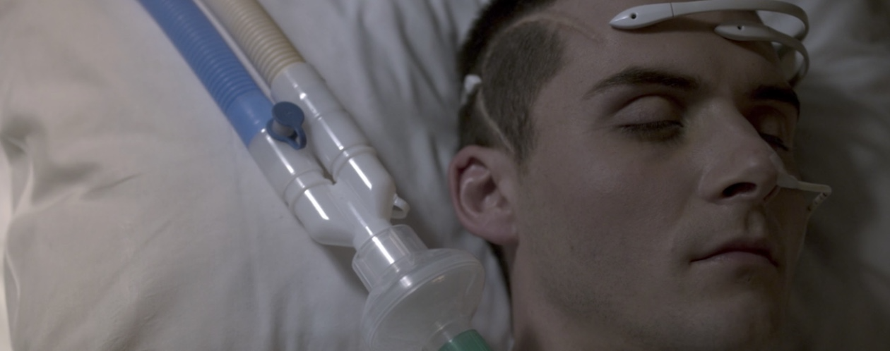
OtherLife
Australian science fiction thriller exploring virtual reality technology and its consequences. Starring Jessica De Gouw and Thomas Cocquerel. Directed by Ben C. Lucas. Netflix international release.
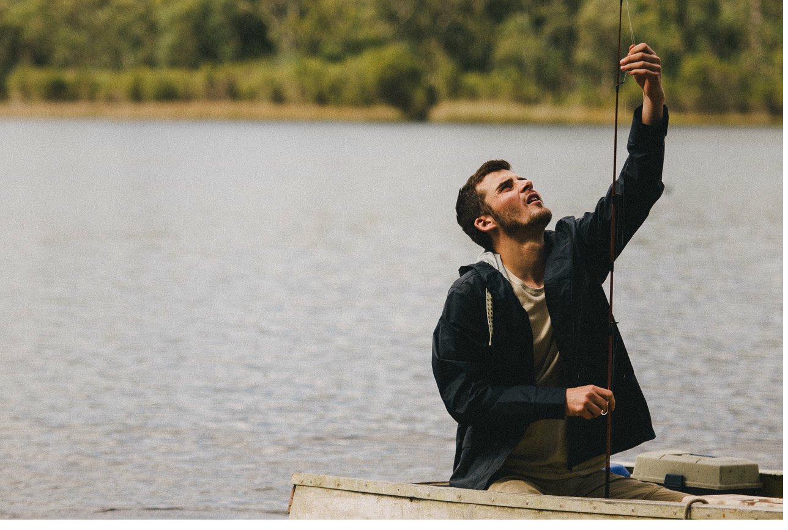
I Met a Girl
Romantic drama starring Brenton Thwaites and Lily Sullivan. A story about love and mental health. Directed by Luke Eve. Stan original release.
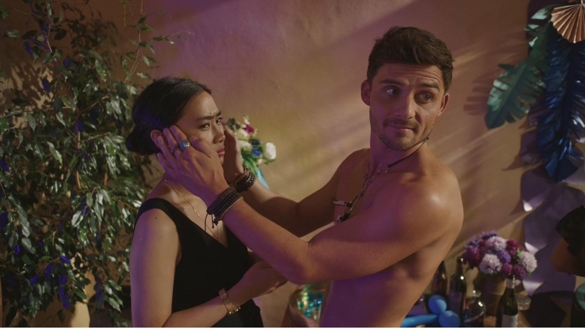
Bad Girl
Psychological thriller alongside Samara Weaving. A tense exploration of trust and deception within a family unit. Directed by Fin Edquist.
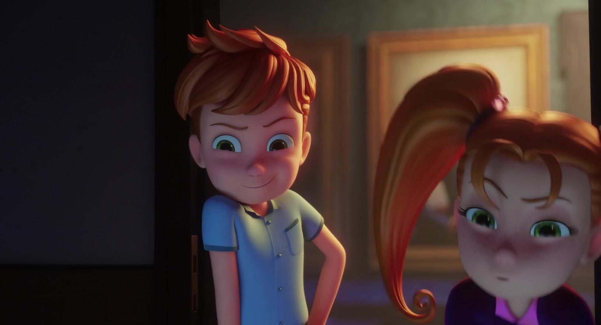
100% Wolf
Australian animated feature film. Voice cast in this family adventure about a young heir to a werewolf clan. Directed by Alexs Stadermann. Theatrical release worldwide.
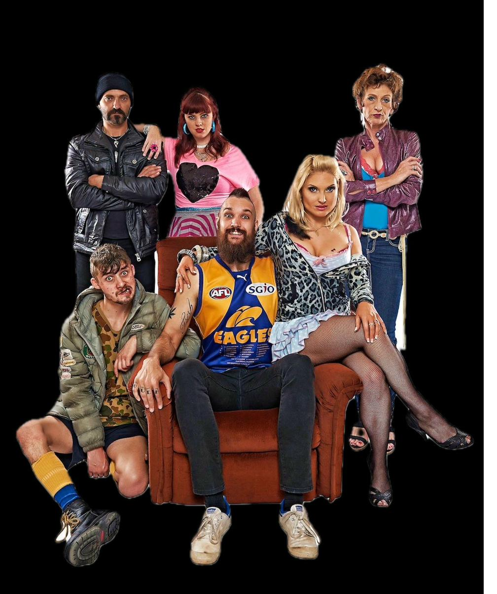
The Legend of Gavin Tanner
Lead role in the cult Australian web series. Three seasons of character-driven comedy-drama set in Perth's western suburbs. Built a dedicated online following and launched several careers.
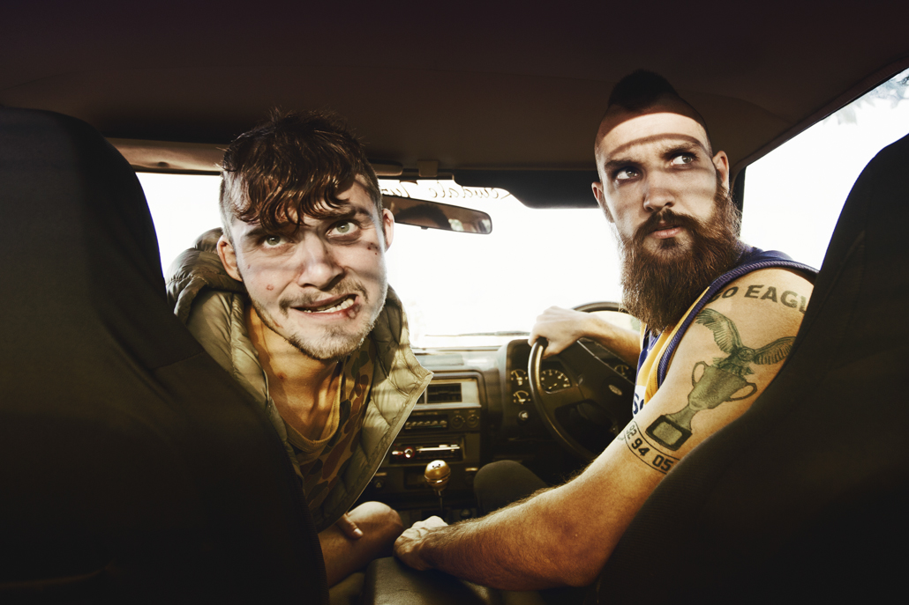
A Few Less Men
Australian comedy sequel to A Few Best Men. Ensemble cast in this outback road trip adventure. Directed by Mark Lamprell.
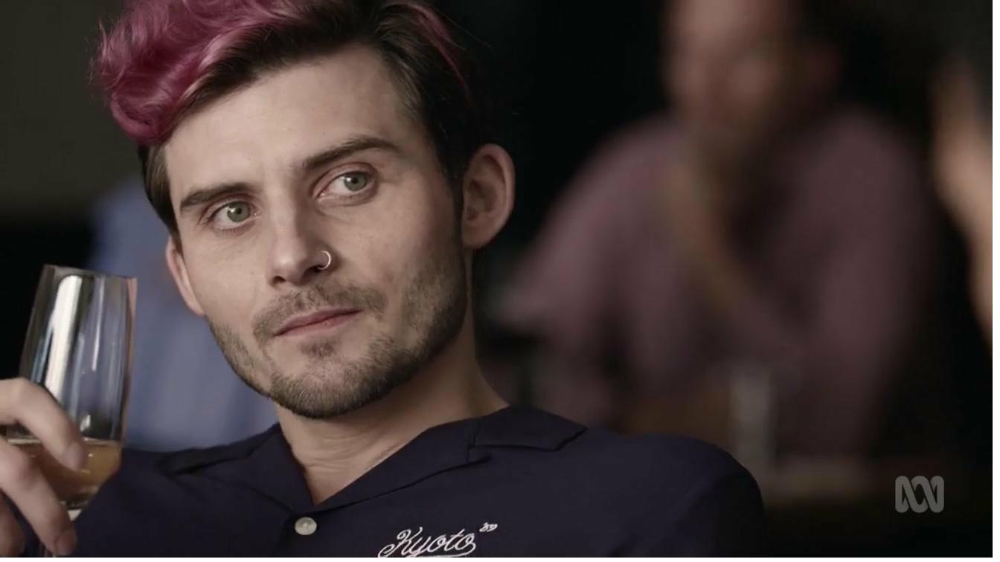
The Claremont Murders
True crime television series based on one of Australia's most infamous serial murder cases. A dramatised account of the investigations that gripped Western Australia for decades.
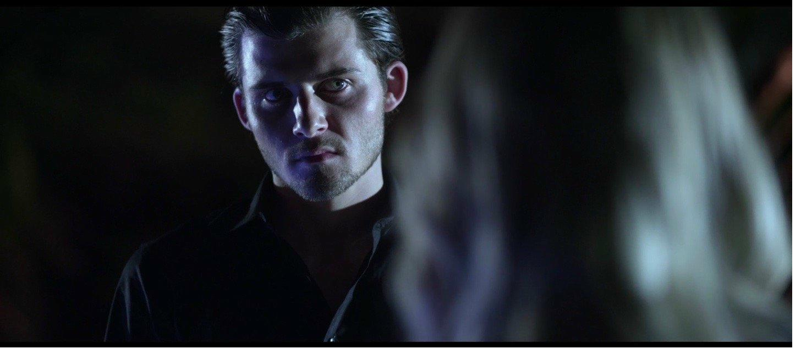
Sororal
Co-lead in this Giallo-inspired horror thriller. Graham's first major feature film role. A stylistic homage to Italian giallo cinema, shot in Perth.

Council
Lead in this sci-fi short film. Won Best Actor at the Next Gen Short Film Festival as part of Fringe World 2017. A visually striking genre piece.
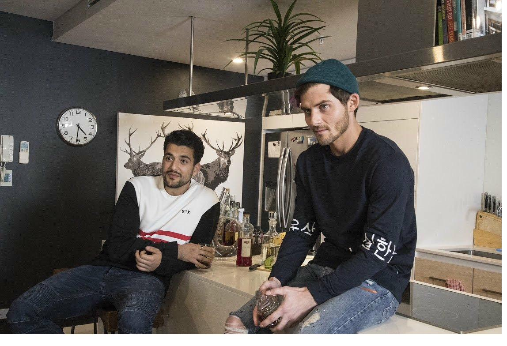
Hidden Light
Australian independent feature film exploring themes of faith, identity, and connection in contemporary Australia.
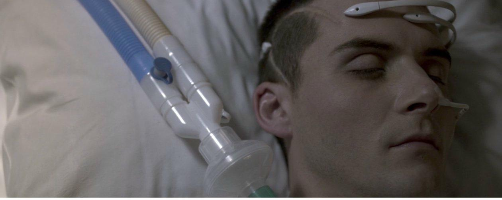
Dark Sister
Australian psychological drama exploring sibling dynamics and dark family secrets. An atmospheric, character-driven thriller.
Full credits available on IMDb ↗
Enquire About Availability